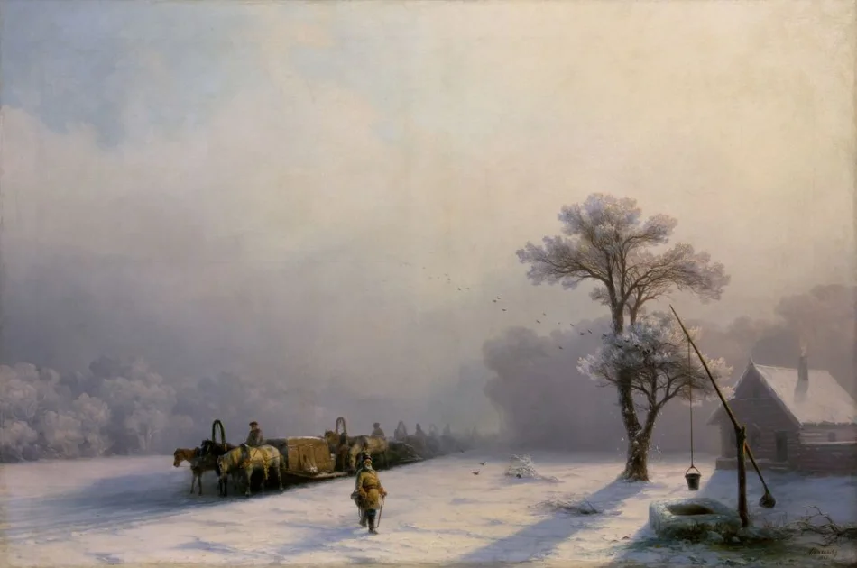

Ivan Constantinovich Aivazovski
Український морський художник вірменського походження, колекціонер, філантроп
About
Іван Костянтинович Айвазовський – український живописець-мариніст вірменського походження, колекціонер, меценат.
Будучи художником зі світовою славою, Іван Костянтинович Айвазовський вважав за краще жити і працювати на своїй батьківщині — у Криму. Айвазовський найбільш відомий своїми морськими пейзажами, які складають більше половини його робіт. Художник вважається одним з найвидатніших мариністів усіх часів.
Ivan Konstantinovich Aivazovsky - Russian marine painter of Armenian origin, collector, philanthropist.
Being a world famous artist, Ivan Konstantinovich Aivazovsky preferred to live and work in his homeland - in the Crimea. Aivazovsky is best known for his seascapes, which make up more than half of his work. The artist is considered one of the greatest marine painters of all time.
History

Будинок, в якому народився Айвазовський | The house where Aivazovsky was born
Portfolio
Зимовий обоз у дорозі, 1857 г. | Winter wagon train on the way, 1857

Веселка, 1873 г. | Rainbow, 1873

Неаполітанська затока вранці, 1893 г. | Gulf of Naples in the morning, 1893